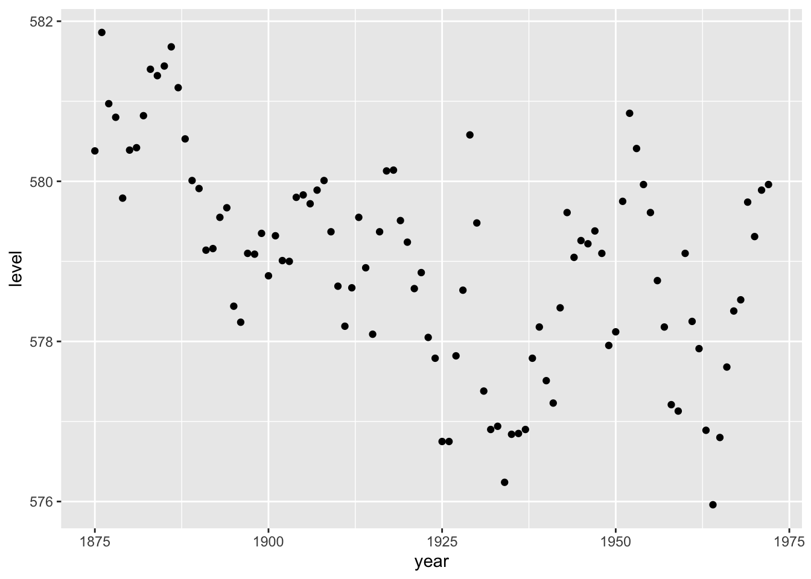

library(palmerpenguins)
library(tidyverse)Appendix H — Class activities
There are various ways that I have found to use this book in classes. There does not seem to be one best way, but it seems to depend on enthusiasm and size of the group. If they can commit to reading the chapter before the lecture, then I have found using class for group-based projects and discussion is nice. Each week create small groups, each of two to four students (create new groups every week to give students a chance to work with new people). Then following a “think-pair-share” exercise (Lyman 1981) have them work through most exercises, first by themselves, then compare with their group, and finally share selected answers with the class. I recommend creating a Google Doc and using that in places to make it easier to share.
In terms of timing and coverage, I have found that provided that Part I “Foundations” is covered, then the rest of the chapters are fairly independent. While I try to go with one chapter per week, students sometimes take a while to get started, and the first three chapters takes about three weeks (even though there is not much to the first chapter).
Typically, somewhere between the first and second papers is where it all starts to come together. It is important that Paper 1 is returned quickly to them so that they are able to incorporate lessons from that for future papers.
Chapter 1—Telling stories with data
- Write a one-paragraph response to: “What is data science?”. Strong answers would include references and draw on your own experience.
- Take a photo of the class, then display the photo. Ask the students in their groups to write three aspects about who the photo shows (faces, class composition, etc), and three aspects about what the photo does not (context, thoughts, emotions, motivations, students who are not present, etc). Discuss how this relates to data science.
- Discuss the ten elements of telling convincing stories with data. Then have the students talk about one that they are particularly experienced with, and another that they are less experienced with.
- How would you go about answering the following question: “How long is your hair?”
Chapter 2—Drinking from a fire hose
- Call on students to explain each of
mutate(),select(),filter(),arrange(),summarize(), and then code an example of their use. - Explain what class is, with an example.
- Simulate 100 draws from the uniform distribution with mean 5 and standard deviation 2. Write one test for this dataset.
- Simulate 50 draws from the Poisson distribution with lambda 10. Write two tests for this dataset.
- Gather some data on Marriage Licence Statistics in Toronto using Open Data Toronto, then clean and graph it (hint: consider
separate()and themlubridate::ymd()for the dates). - The following code produces an error. Please add it to a GitHub Gist, and email it to the instructor asking for help:
tibble(year = 1875:1972,
level = as.numeric(datasets::LakeHuron)) |>
ggplot(aes(x = year, y = level)) |>
geom_point()Chapter 3—Reproducible workflows
- Make a new R Project with an appropriate file structure.
- Use Quarto to make a PDF with a title, author, and an abstract.1
- Add three sections and some code that produces the mean bill length, by species, for
palmerpenguins::penguins(with the code itself hidden). - Add a citation of R and
palmerpenguinsand also add a graph of body mass, by sex. - Add a paragraph of text about the graph and a cross-reference. Also add a table about the number of species, by year.
- [Have students do this themselves at the same time as you (very slowly) run through it on the screen:] Set-up git on your local computer.2 Make a GitHub repo, then make a local copy, make some changes, and push.
- Find the GitHub repo of a partner, fork it, make a change, and make a pull request.
- The following code produces an error. Please follow the strategies in Section 3.5.1 to fix it.
tibble(year = 1875:1972,
level = as.numeric(datasets::LakeHuron)) |>
ggplot(aes(x = year, y = level)) |>
geom_point()- The following code produces an error. Please follow the strategies in Section 3.5.1 to fix it.
tibble(year = 1871:1970,
annual_nile_flow = as.character(datasets::Nile)) |>
ggplot(aes(x = annual_nile_flow)) +
geom_histogram()- The following code produces an error. Following Section 3.5.2 create a reprex (change the example to use a more common dataset such as
mtcars), add it to a GitHub Gist, and email it to the instructor.
tibble(year = 1875:1972,
level = as.numeric(datasets::LakeHuron)) |>
ggplot(aes(x = year, y = level)) |>
geom_point()- The following code produces an error. Please use ChatGPT, or an equivalent LLM, to correct it. Discuss: 1) the prompt, and 2) the corrected code.
Chapter 4—Writing research
- Discuss your preferred approach (data-first/question-first/other) to research and why.
- Explain, with reference to examples, what is an estimand, estimator, and estimate.
- Please consider “selection bias” and include the definition in a sentence in the same way that Alexander (2019) does for the Gini coefficient.
- Please use ChatGPT, or an equivalent LLM, to create a prompt that answers the question “What is a selection effect?”. With a partner, improve the response by adding context, references, and making it true (if necessary). Discuss three aspects: 1) the prompt, 2) the original answer, 3) your augmented answer.
- Pick one of the well-written quantitative papers:
- Write out the original title. What do you like, and not like, about it? Write an alternative title for it.
- Write out the abstract. What do you like, and not like, about it?
- Please prompt ChatGPT, or an equivalent LLM, to create an alternative abstract (copy the prompt so you can discuss it).
- Draw on all of this to put together an improved abstract and then discuss everything.
- Make a plan, based on King (2006), for how you will write a meaningful paper by the end of this class. (For PhD students: Detail three journals/conferences, in order, that you will submit it to, and why the paper would be a good fit at each.)
- Paper review: Please read Gerring (2012) and write a review of one page.
Chapter 5—Static communication
- The following produces a scatterplot showing the level, in feet, of Lake Huron between 1875 and 1972. Please improve it.
tibble(year = 1875:1972,
level = as.numeric(datasets::LakeHuron)) |>
ggplot(aes(x = year, y = level)) +
geom_point()
- The following produces a bar chart of the height of 31 Black Cherry Trees. Please improve it.
datasets::trees |>
as_tibble() |>
ggplot(aes(x = Height)) +
geom_bar()
- The following produces a line plot showing the weight of chicks, in grams, by how many days old they were. Please improve it.
datasets::ChickWeight |>
as_tibble() |>
ggplot(aes(x = Time, y = weight, group = Chick)) +
geom_line()
- The following produces a histogram showing the annual number of sunspots between 1700 and 1988. Please improve it.
tibble(year = 1700:1988,
sunspots = as.numeric(datasets::sunspot.year) |> round(0)) |>
ggplot(aes(x = sunspots)) +
geom_histogram()`stat_bin()` using `bins = 30`. Pick better value with `binwidth`.
- (The idea for this exercise is from Liza Bolton) The following code, is taken from the
palmerpenguinsvignette and produces a beautiful graph. Please modify it to create the ugliest graph that you can.
ggplot(data = penguins,
aes(x = flipper_length_mm,
y = body_mass_g)) +
geom_point(aes(color = species,
shape = species),
size = 3,
alpha = 0.8) +
scale_color_manual(values = c("darkorange", "purple", "cyan4")) +
labs(
title = "Penguin size, Palmer Station LTER",
subtitle = "Flipper length and body mass for Adelie, Chinstrap and Gentoo Penguins",
x = "Flipper length (mm)",
y = "Body mass (g)",
color = "Penguin species",
shape = "Penguin species"
) +
theme_minimal() +
theme(
legend.position = c(0.2, 0.7),
plot.title.position = "plot",
plot.caption = element_text(hjust = 0, face = "italic"),
plot.caption.position = "plot"
)
- The following code provides estimates for the speed of light, from three experiments, each of 20 runs. Please create an average speed of light, per experiment, then use
knitr::kable()to create a cross-referenced table, with specified column names, and no significant digits.
datasets::morley |>
tibble()# A tibble: 100 × 3
Expt Run Speed
<int> <int> <int>
1 1 1 850
2 1 2 740
3 1 3 900
4 1 4 1070
5 1 5 930
6 1 6 850
7 1 7 950
8 1 8 980
9 1 9 980
10 1 10 880
# … with 90 more rowsChapter 6—Farm data
- Reflect on the quote from Amia Srinivasan in Appendix A, and discuss with regard to the measurement of intelligence.
- Discuss to what extent the measurement of happiness is valid, being sure to define the term as part of your discussion.
- Discuss to what extent the measurement of beauty is reliable, being sure to define the term as part of your discussion.
- How is it possible that Country A’s measure of imports of a given good from Country B do not equal Country B’s measure of exports of that same good to Country A? Discuss, in detail, another measurement that this makes you question.
- Please think about the last math exam that you did. Discuss missing data from the context of the marker.
- Katherine Rundell, a fellow at All Souls College, in response to a question of whether the word “emancipation” is from John Donne replied: “It is, although, of course, I think it would be amiss of me not to offer the caveat that often, the OED has always found first uses in canonical authors, in part because they’re just the ones who survived fire”. Discuss sampling bias in this context.
- The Dean wants to understand the average statistical ability of students in the faculty. She agrees to provide you will some funding, but not much, and asks you to report back in a week. Please define the target population, sampling frame, and sample. Please further discuss whether you will use probability or non-probability sampling, and within these, which approach you want to use. Discuss the strengths and weaknesses of your approach.
- Please use a probabilistic sampling approach to determine the average height of the class.
- Paper review: Please read Bradley et al. (2021) and write a review of at least one page, drawing on an example that you are familiar with.
Chapter 7—Gather data
- Gelman activity of two truths and one lie.
- Paper review: Please read Kish (1959)
Chapter 8—Hunt data
- Paper review: With reference to Hammond et al. (2022), please discuss experimental design, informed consent and equipoise. Please write at least two pages.
Chapter 9—Clean and prepare
Chapter 10—Store and share
Chapter 11—Exploratory data analysis
Chapter 12—Linear models
- Please use the data underpinning Cohn (2016), available here, to build three different models and compare the results.
Chapter 13—Generalized linear models
Chapter 14—Causality from observational data
Chapter 15—Multilevel regression with post-stratification
- Paper review: Please read Wang et al. (2015) and write a review of at least two pages.
Chapter 16—Text as data
Appendix A—R essentials
Note for instructors: There are always a small number of students who struggle with getting the PDF set-up locally. Worst case, they can run it in Posit Cloud, which works.↩︎
Note for instructors: 1) If you have hidden your GitHub email then make sure you use the alias when you add an email address locally. 2) There will always be a few students that cannot get git working locally, and I find the best approach is to triage by pairing them with an advanced student while you demonstrate, and if there are remaining issues then deal with them individually at an office hour.↩︎